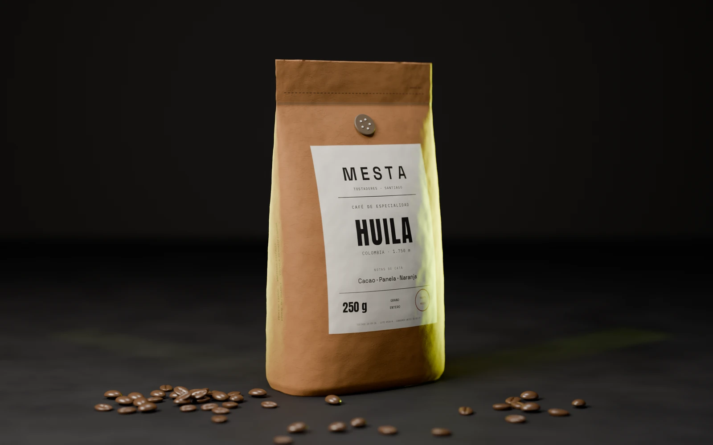
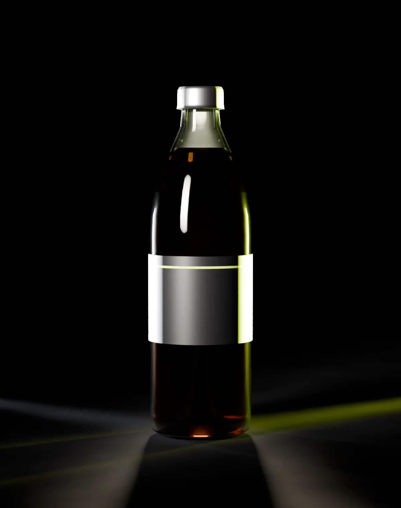

Eye tracking, facial coding y respuesta galvánica, cruzados con modelos de IA propios, para convertir reacciones no conscientes en una decisión validada antes de construir.
REC ●00:00:00 03 señales · IA propia
01 · Señal no consciente
Lo que no se dice sí se mide.
NEUROGENOMIC
Una encuesta recoge lo que la persona cree que siente. La mirada, el gesto y la piel registran lo que realmente pasa, antes de que lo pueda explicar.
Registro sincronizado · 0–8 sIlustrativo
Declarado
Demostración visual. No corresponde a datos de un estudio real.
02 · Tecnología
Tres señales que no dependen de lo que se declara.
Eye tracking, facial coding y respuesta galvánica, cruzados con modelos de IA propios, para convertir reacciones no conscientes en una decisión validada antes de construir.
Las herramientas detrás del dato.
De la señal cruda a la decisión: el software con el que capturamos, procesamos, modelamos y mostramos cada estudio.
01 · Captura
Experimentos y señales
Diseño del estímulo, registro de mirada, rostro y piel.
Tobii Pro Lab
iMotions
Pupil Labs
PsychoPy
OpenFace
MediaPipe
OpenCV
02 · Datos
Limpieza y estructura
Sincronización de señales, depuración y bases consultables.
Python
SQL
PostgreSQL
BigQuery
pandas
NumPy
SciPy
R
Jupyter
Git
Docker
03 · Modelos
Análisis e IA
Procesamiento de señales, estadística y modelos predictivos.
NeuroKit2
scikit-learn
PyTorch
TensorFlow
Hugging Face
statsmodels
XGBoost
04 · Decisión
Visualización y activación
Reportes, dashboards y la implementación en tus canales.
Power BI
Tableau
Looker Studio
Plotly
Matplotlib
Google Analytics 4
Figma
WordPress
Shopify
React
Ejemplo
Herramientas de referencia: el stack se ajusta a cada proyecto. Las líneas de código son ejemplos ilustrativos.
03 · Eye tracking + IA
Así mira tu cliente
Combinamos eye tracking e IA para revelar qué capta la mirada, cuánto tiempo la retiene y qué pasa desapercibido. Los consumidores deciden en segundos, y la mayoría de esas decisiones ocurre antes de que puedan explicarlas. Por eso no preguntamos qué les gusta: medimos cómo reaccionan.
01FijacionesCada punto es una pausa de la mirada, numerada en el orden real.
02ScanpathEl recorrido que une las fijaciones: cómo se lee la pieza.
03HeatmapLa atención acumulada del panel completo sobre la pieza.
04Zonas ciegasLo que nadie miró. Lo que hoy no está trabajando.
Estímulo · Packaging · Fase 01Marca ficticia · demostración

Analizamos tu packaging, logo, aviso o sitio web para mostrarte con datos dónde se concentra la atención y qué elementos necesitan ajustes antes de salir al mercado.
04 · Inteligencia biométrica
Tu packaging tiene una mirada para ganar.
Mira lo que tus compradores realmente observan antes de comprar.
01TapaPrimera fijación
02EtiquetaPermanencia alta
03Hombro y cuelloRevisitas
04BaseMirada breve
Eye tracking · packagingIlustrativo

01020304FotoMapa de calor⇄
Arrastra para compararDemostración visual
Eye tracking·Respuesta GSR·Facial coding
05 · Caso
Un packaging, tres versiones, una respuesta clara.
Marca anonimizada. Representación ilustrativa.
01 · Desafío
Antes
Tres propuestas y un equipo dividido.
Marketing, ventas y diseño defendían versiones distintas. Cada opinión era razonable, pero no había un criterio común para decidir antes de imprimir.
3 versiones
Sin consenso
Riesgo de reimpresión
02 · Aplicación
Medición
Una góndola simulada, junto a la competencia.
Las tres versiones se mostraron en su contexto real de compra, rodeadas de otros productos. Cada participante buscó el producto mientras registrábamos su mirada y su expresión facial.
Eye tracking
Facial coding
Orden aleatorio
03 · Resultado
Ilustrativo
Una versión ganó en las dos señales.
La versión B concentró más atención sostenida y una respuesta emocional más positiva. El debate se cerró con evidencia compartida, no con jerarquía, y A y C dejaron ideas para ajustar B.
Ranking por versión
Heatmaps
Ajustes recomendados
06 · Ética y datos
Medimos reacciones. Con reglas claras.
Una señal biométrica es un dato sensible. Por eso cada estudio parte con consentimiento informado, usa solo los datos necesarios y entrega resultados agregados, no perfiles individuales.
Centro de confianzaCómo tratamos los datos biométricos
Consentimiento informado
Cada participante sabe qué se mide, para qué y puede retirarse cuando quiera.
Seudonimización
Las señales se guardan con un código, separadas del nombre y de los datos de contacto.
Acceso restringido
Solo el equipo del estudio accede a los registros, con permisos por proyecto.
Resultados agregados
Entregamos patrones del grupo, nunca perfiles de personas individuales.
Retención definida
Acordamos con el cliente cuánto tiempo se conservan los datos y cuándo se eliminan.
Protocolo Lo que cumplimos
C·01Consentimiento que se entiendeOK
C·02Acceso restringido y datos separados de la identidadOK
C·03Revisión legal de cada proyecto según su jurisdicciónOK
C·04Derecho a salir, siempreOK
Líneas rojas Lo que no hacemos
R·01No vendemos datosBloqueado
R·02No perfilamos individuosBloqueado
R·03No diseñamos manipulaciónBloqueado
R·04No medimos a menores sin resguardoBloqueado
Las obligaciones legales dependen del tipo de estudio, los datos tratados, la ubicación de los participantes y la jurisdicción aplicable. Recomendamos revisar cada proyecto con asesoría legal especializada. Mencionar la Ley 21.719 no constituye una certificación de cumplimiento.
07 · Diagnóstico
¿Construimos tu próxima decisión con evidencia?
Cuéntanos qué quieres evaluar: una marca, una campaña, un packaging o un sitio web. Revisamos el desafío y te proponemos el método adecuado.